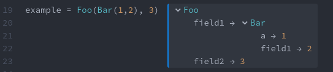
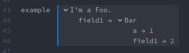
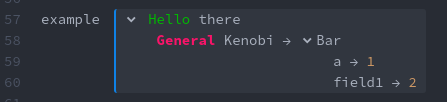
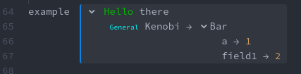
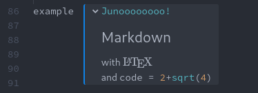
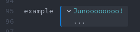

Information for Package Developers
Custom Inline Display
Juno's inline display system operates on three distinct levels:
- If you create a new type and don't define a
showmethod for it, Juno will use a fallback that lazily shows all fields. - If you've defined a
showmethod for theapplication/prs.juno.inlineMIME type then Juno will
- display what is printed by that method or
- display the above fallback for the object returned by the
showmethod.
- If you've defined a
showmethod for thetext/plainMIME type Juno will use that to create a simple Tree View. - TreeViews.jl allows customizing everything about how your type is displayed.
The following will show how to use the TreeViews.jl API for pretty-printing in a few simple cases.
First, let's define some custom types we want to display:
struct Foo
field1
field2
end
struct Bar
a
field1
endBy default, Juno displays those like this:

This default rendering method will not be used if you define e.g.
Base.show(io::IO, ::MIME"text/plain", ::Foo) = print(io, "Foo")for displaying this nicely in the REPL. If you also define a Base.show(io::IO, ::MIME"application/prs.juno.inline", ::Foo) method, that will be used instead. As a special case, you can also return an object from that show method, and Juno will show that with its default display methods (which allows you to recover what is shown above):
Base.show(io::IO, ::MIME"application/prs.juno.inline", x::Foo) = xTo switch to a TreeViews.jl display we can simply overload the following methods for our types:
import TreeViews: hastreeview, numberofnodes, treelabel, treenode
hastreeview(::Foo) = true
hastreeview(::Bar) = trueSince TreeViews.jl implements sensible defaults for custom types, this gives us

It is of course possible to customize this to your heart's content. For example, we might only want to display Foos first field with
numberofnodes(::Foo) = 1or change the Foo in the first line to something else:
treelabel(io::IO, x::Foo, ::MIME"text/plain") = print(io, "I'm a Foo.")
Juno accepts a few different MIME types:
text/plain: Probably best compatibility.text/html: Allows much richer display options (e.g. LaTeX).application/prs.juno.inline: Same astext/html, but specific to Juno.
Even text/plain allows for some (limited) control over styling (colors, decorations). In general, you can print the correct SGR codes and everything will work, but I'd recommend using Crayons.jl or a similar library instead:
# plain SGR
treelabel(io::IO, x::Foo, ::MIME"text/plain") =
print(io, "\x1b[32mHello\x1b[0m there")
using Crayons
treelabel(io::IO, x::Foo, i::Int, ::MIME"text/plain") =
print(io, crayon"(250,20,105) bold"("General"), " Kenobi")
Those styles also apply to display in the REPL, provided for example by the as-of-yet unregistered REPLTreeViews.jl package:

Using text/html allows for greater customization by using inline CSS
treelabel(io::IO, x::Foo, i::Int, ::MIME"text/html") =
print(io, "<span><span style=\"color:aqua; font-size:0.7em\">General</span> Kenobi</span>")
The application/prs.juno.inline MIME type allows you to make use of the styling Atom uses:
treelabel(io::IO, x::Foo, ::MIME"application/prs.juno.inline") =
print(io, "<span class=\"syntax--support syntax--type syntax--julia\">Junoooooooo!</span>")
It's also possible to e.g. print no label for Foos first field and handle everything in with treenode:
treelabel(io::IO, x::Foo, i::Int, ::MIME"application/prs.juno.inline") = print(io, "")
using Markdown
treenode(x::Foo, i::Int) = MD("""
## Markdown
with ``\\LaTeX``\n
and `code = 2+sqrt(4)`
""")
To hide the treenode display, simply return missing:
treenode(x::Foo, i::Int) = missing
treelabel(io::IO, x::Foo, i::Int, ::MIME"application/prs.juno.inline") = print(io, "...")
Nothing at all will be shown if treelabel doesn't print anything and treenode returns missing.
Displaying Plots and Graphics
Plots can be displayed by providing a show method for one of the following MIME types (ordered by priority):
application/prs.juno.plotpane+html- rendered in awebviewimage/svg+xml- rendered in awebviewimage/pngimage/jpegimage/tiffimage/bmpimage/gif
The first two of those MIME types are rendered in a webview to a) prevent XSS and b) make sure not to crash Atom for big or complex graphics. For the others we provide some basic pan and zoom utilities.
So if you want to e.g. display an svg you can do the following:
struct Baz
data
end
Base.show(io::IO, ::MIME"image/svg+xml", b::Baz) = print(io, b.data)
Baz(open(f -> read(f, String), "emu.svg"))
application/prs.juno.plotpane+html is HTML, but also indicates that you want your type to be displayed in Juno's Plot Pane.
struct Blah
data
end
function Base.show(io::IO, ::MIME"application/prs.juno.plotpane+html", b::Blah)
colors = get(io, :juno_colors, nothing)
size = get(io, :juno_plotsize, [100, 100])
html = """
<div style="
background-color: #eee;
color: #222;
width: $(size[1]-40)px;
height: $(size[2]-40)px;
position: absolute;
top: 0;
left: 0;
padding: 20px;
margin: 0;
">
<span>$(b.data)</span>
<br/>
<input/>
</div>
"""
print(io, html)
end
Blah("Input stuff here:")